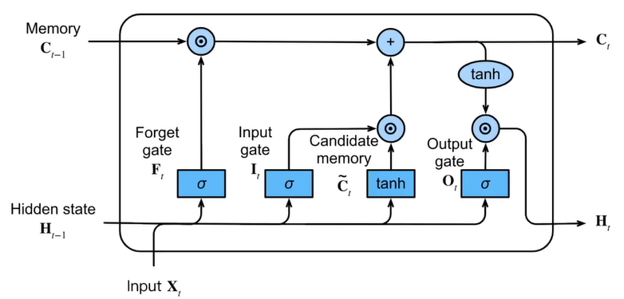
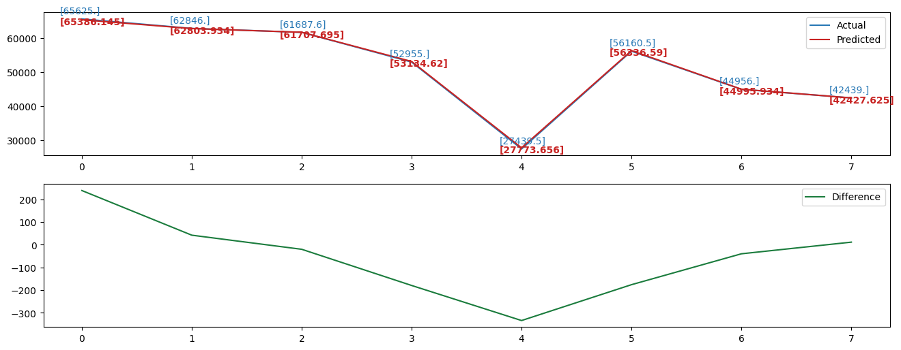
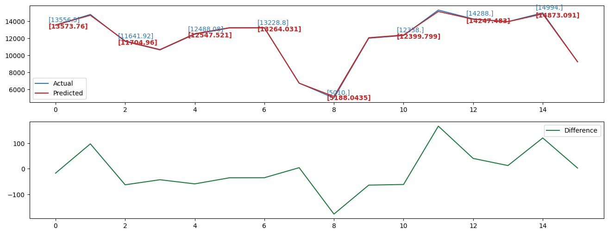

*Image comes from the book "Dive into Deep Learning" by Li Mu.
In this senior design project report, a two-step inventory management analysis has been introduced for the raw material inventory of the Sichuan Mountek Microelectronic Technology Co., LTD. The goal is to explore the possibility to improve the inventory management of Mountek company via optimizing the inventory cost. First, the ABC analysis has been used to select the two most important raw materials, epoxy molding compound (EMC) and frame, in the warehouse. Then, four different models, Auto Regressive moving average model (ARIMA), Vector Auto Regressive model (VAR), BP Neural Network with Particle Swarm Optimization and Long Short-Term Memory Network model (LSTM) have been applied to analyze the stock out flow of the two materials. My work is focused on the VAR model and LSTM model. Comparison between empirical and fitted value based on RMSE help us determine LSTM as our best model. But in this page, I will only introduce the LSTM model. The code refers to 知乎.
The data we used in this report is collected from Sichuan Mountek Microelectronic Technology Co., LTD’s raw material warehouse. Mountek is a semiconductor packaging company which adopts the world’s first-class brands of automatic packaging and testing instruments to achieve completely independent production of the whole packaging process, and now has a variety of types of product packaging solutions and reliability analysis capabilities, and can provide diversified packaging and testing program development and customized services according to customer needs. Mountek built its first raw material warehouse in Suining in 2010, and a second warehouse was built in Neijiang in 2019, which has gradually been put into use since August 2021. Part of the data are shown below.
Considering our time series are not too big, instead of separating data into several batch, we run the data as one batch. To normalize our data, we choose min-max method to transform the original data so that it falls within a specified range, typically between 0 and 1. With 0.02 learning rate and 1000 epochs which to make sure the loss is under 1*10-6, we successfully trained our model with 16 hidden layers to get a satisfied result.
Below figures shows the prediction results of one different time series. On the left is the predction results of validation datasets. The right image is the prediction result of test datasets. In each figure, the upper subfigure present both the actual data and prediction results based on the LSTM model which is trained by training data in each time series. As we can see, the actual data and prediction data are almost overlap with each other which may because of number was too big to show difference and LSTM model has a great prediction result. Thus, to visually show difference between them, we label the values of some time points and plot the difference between them in the nether subfigure.
 |
 |
from asyncore import read
import pandas as pd
from datetime import datetime
def data_sort_monthly(filename,name):
data = pd.read_csv(filename)
data['Date']=pd.to_datetime(data['Date'])
data=data.set_index('Date')
datasum = data.resample('m').sum().to_period('m')
datasum = datasum.loc[:, ~datasum.columns.str.contains('Unnamed')]
datasum.to_csv(f'~/{name}.csv') # Change the path to your own path
def data_sort_weekly(filename,name):
data = pd.read_csv(filename)
data['Date']=pd.to_datetime(data['Date'])
data=data.set_index('Date')
datasum = data.resample('w').sum() # to_period('w') More obvious result
datasum = datasum.loc[:, ~datasum.columns.str.contains('Unnamed')]
datasum.to_csv(f'{name}.csv') # Change the path to your own path